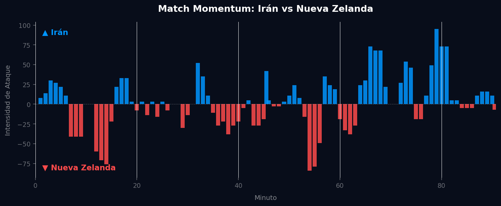

Grupo G
 Nueva Zelanda
Nueva Zelanda
Irán vs Nueva Zelanda
📅 2026-06-15 · 🕒 20:00 (Local)
Irán

2 - 2
FINALIZADO
Nueva Zelanda
📅 2026-06-15 · 🕒 20:00 (Local)
Nueva Zelanda
Este enfrentamiento presenta dos equipos con perfiles extremadamente similares en eficiencia ofensiva pero dramáticamente diferentes en estructura táctica. Irán (Mundial 2022) registra 29 disparos con 4 goles (13.8%), mientras Nueva Zelanda (recientes) acumula 31 disparos también con 4 goles (12.9%). La paridad estadística oculta diferencias fundamentales en cómo ambos equipos juegan al fútbol. Uno es rudimentario; el otro, aunque no sofisticado, intenta algo más.
Irán despliega una estructura ofensiva distribuida en el mapa de calor, con presencia equilibrada en zonas laterales y área central. Su red de pases revela una construcción con múltiples conexiones entre jugadores, generando complejidad en la circulación. Aunque la eficiencia es baja (4 goles en 29 disparos), el equipo intenta construir juego a través de diferentes vías.
El xT acumulado de Irán (~0.30) es marginalmente superior al de Nueva Zelanda (~0.25), pero ambos son preocupantemente bajos. Irán distribuye la amenaza en múltiples zonas, indicando al menos intentos de generar peligro desde diferentes ángulos.
En el mapa defensivo, Irán ejecuta una alta densidad de acciones distribuidas por todo el campo. El equipo defiende mediante presión extendida, recuperando balón en zonas intermedias y avanzadas. Esto sugiere un equipo que busca proactivamente interrumpir el juego rival.
Asimismo, despliega múltiples líneas de conducción progresiva, con iniciativas desde defensa, medio campo y ataque. Hay variabilidad en las rutas de progresión, indicando un equipo que intenta diversificar sus formas de avanzar. Su red de asistencias distribuye pases desde múltiples ubicaciones, con varios jugadores capaces de crear.
Nueva Zelanda muestra algo casi único en el fútbol moderno: una red de pases con apenas 5-6 jugadores conectados directamente. Esta es una configuración extremadamente primitiva. Los nodos principales son Sail, Cacace, Garbett, Waine y Wilmes, funcionando como un corredor directo sin múltiples opciones de circulación. El mapa de calor está concentrado en zonas específicas pero sin el dinamismo que permite Irán. Nueva Zelanda juega fútbol de puente directo: recibe en defensa y envía balones largos sin construcción intermedias.
Genera amenaza (xT) casi exclusivamente desde zonas muy específicas y limitadas. Las áreas de mayor xT se concentran en dos o tres zonas únicamente, reflejando la monotonía táctica. El equipo neozelandés tiene dificultad para crear peligro porque su red de pases limitada no permite la diversidad ofensiva necesaria.
Defensivamente, Nueva Zelanda mantiene una densidad defensiva significativamente menor. Sus acciones defensivas se concentran principalmente en zona media y defensiva, con presencia escasa en espacios avanzados. Es un equipo que defiende profundo y compacto, esperando contraataques.
Sus conducciones progresivas son ordenadas pero extremadamente limitadas y predecibles. Las progresiones son lineales e intentan avanzar de forma directa sin variantes significativas. Su red de asistencias es extraordinariamente simple, con apenas 2-3 jugadores actuando como asistentes.
En un emocionante y dinámico encuentro, Irán y Nueva Zelanda firmaron un electrizante empate 2-2 en el cierre de la primera jornada del Grupo G. Nueva Zelanda dio la gran sorpresa al adelantarse por partida doble gracias a su fútbol directo y vertical; balones largos lanzados por Sail y Cacace que rompieron el bloque defensivo de contención iraní y se tradujeron en dos goles de gran efectividad física. Sin embargo, la selección de Irán no bajó los brazos y, apoyándose en su estructura de pases más fluida e interconectada, tomó el control de la posesión y elaboró ataques variados. La constancia y variabilidad ofensiva permitieron a los asiáticos marcar dos goles en la segunda mitad para sellar una vibrante igualdad.


